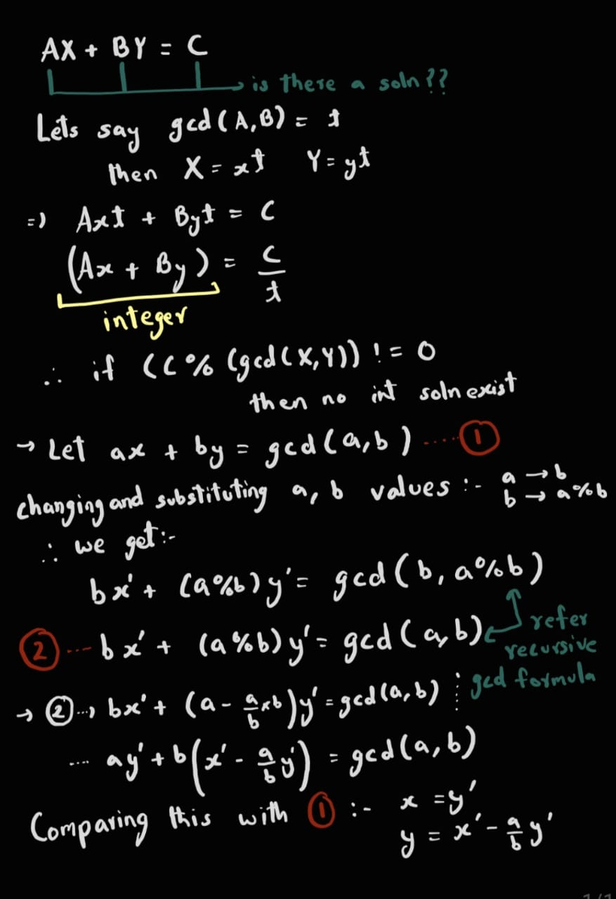

This problem utilizes Diophantine Equations:
We can implement the above using recursion:
void f(int a, int b, int &x, int &y)
{
// base case
if(b==0)
{
x = 1;
y = 0;
return;
}
int x1, y1;x1
f(b, (a%b), x1, y1);
x = y1;
y = x1 - (a/b)*y1;
return;
}